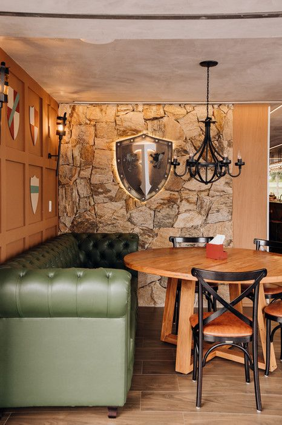
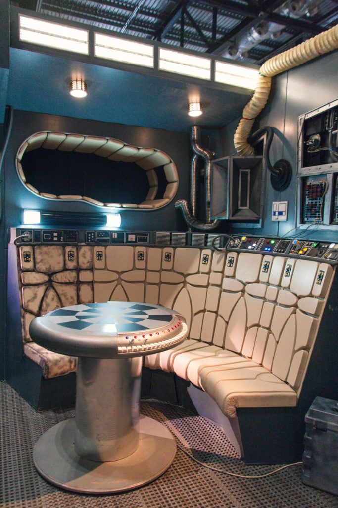
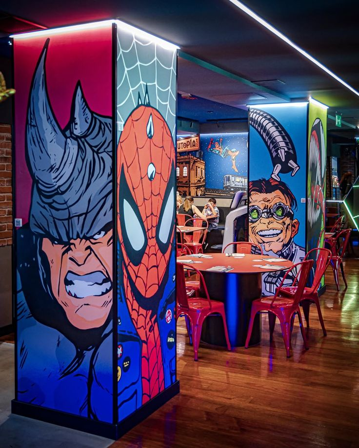

Nuestros Mundos
Explora tres experiencias diferentes. Fantasía Medieval, Ciencia Ficción y Superhéroes te esperan.

La Pinta
Fantasía Medieval
Una taberna diseñada para transportar a los jugadores a un mundo de castillos, dragones, magia y aventuras legendarias.
Juegos destacados
- Dungeons & Dragons
- Pathfinder
- Dungeon World
- Warhammer Fantasy
Ideal para jugadores que disfrutan de exploración, fantasía épica y aventuras clásicas.

El Puente
Ciencia Ficción y Fronteras Galácticas
Inspirado en estaciones espaciales, puertos interestelares y megaciudades tecnológicas.
Aquí se fusionan la estética Cyberpunk, la exploración espacial de Starfinder y la sensación de aventura galáctica inspirada por grandes sagas de ciencia ficción.
Juegos destacados
- Starfinder
- Cyberpunk RED
- Traveller
- Stars Without Number
- Shadowrun
Perfecto para grupos que disfrutan tecnología avanzada, naves espaciales, exploración y conspiraciones corporativas.

La Torre
Héroes y Vigilantes
Un centro de operaciones para héroes, equipos especiales y defensores de la ciudad.
Inspirado en cómics clásicos, equipos heroicos, academias de héroes y organizaciones de protección mundial.
Juegos destacados
- Masks
- Mutants & Masterminds
- Marvel Multiverse RPG
- Icons
Ideal para quienes desean crear héroes, enfrentar villanos y salvar el mundo.
¿Ya elegiste tu próxima aventura?
Reserva una mesa y comienza tu historia.
Reservar Turno